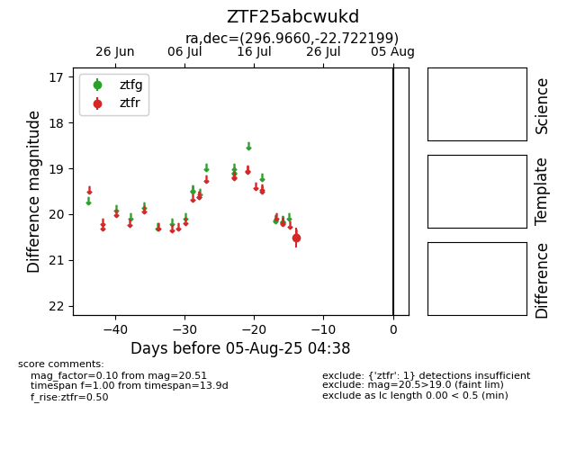

Target ZTF25abcwukd at 2025-08-05 04:38, see:
FINK: fink-portal.org/ZTF25abcwukd
Lasair: lasair-ztf.lsst.ac.uk/objects/ZTF25abcwukd
ALeRCE: alerce.online/object/ZTF25abcwukd
alt names
ZTF25abcwukd (ztf,fink)
coordinates:
equatorial (ra, dec) = (296.9660,-22.72220)
galactic (l, b) = (17.8387,-22.09896)
photometry
last ztfr=20.51
1 ztfr detections
